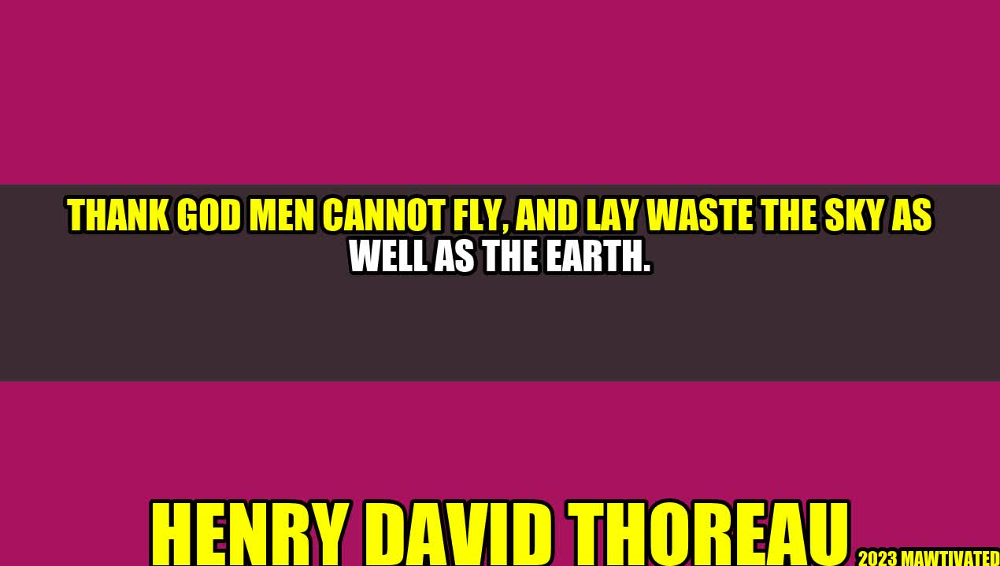

Why It Is a Blessing That Men Cannot Fly
Imagine this scenario: a young girl walks along the beach, picking up trash and plastic washed up from the ocean. She looks up, and sees a man flying overhead, leaving a trail of pollution in his wake. It's a frightening thought, but thankfully, it's not possible. Henry David Thoreau once said, "Thank God men cannot fly, and lay waste the sky as well as the earth." In this article, we will explore the impact of human activities on the environment and why it is a blessing in disguise that humans cannot fly.
Background: Henry David Thoreau
Henry David Thoreau was an American philosopher, poet, and naturalist who lived in the mid-19th century. He was deeply invested in the natural world and often wrote about the beauty and wonder of the environment. Thoreau was a pioneer in the environmentalist movement, and his words continue to inspire people to appreciate and protect the natural world.
"Thank God men cannot fly, and lay waste the sky as well as the earth."
The Impact of Human Activities on the Environment
Human activities have a significant impact on the environment. Industries such as manufacturing and agriculture produce large amounts of pollutants and carbon emissions that contribute to climate change. Transportation, particularly air travel, also has a significant impact on the environment. The use of fossil fuels in cars and airplanes contributes to air pollution and greenhouse gas emissions.
Furthermore, deforestation and urbanization are also major contributors to environmental degradation. These activities destroy natural habitats and disrupt ecosystems, leading to a loss of biodiversity. The world we live in today is vastly different from the natural world that existed before human civilization.
Why It Is a Blessing That Men Cannot Fly
While there are many technological advancements that have greatly benefited humanity, the inability to fly without technological assistance is a blessing in disguise. If humans could fly, we would be able to spread pollution and destruction to the skies as well as the earth. The air pollution generated by air travel alone has a significant impact on the environment.
Additionally, the fact that humans cannot fly has forced us to seek alternative forms of transportation. While these forms of transportation still have environmental impacts, they are generally less damaging than air travel. For example, electric cars produce far fewer greenhouse gas emissions than gas-powered cars.
Furthermore, the inability to fly has also forced us to appreciate the natural world from a different perspective. Without the ability to fly, humans are limited to exploring the earth from the ground, which has led to a deeper appreciation for the natural beauty of the environment.
- Humans cannot spread pollution to the skies
- Forced to seek alternative forms of transportation
- Deeper appreciation for the natural world
Practical Tips for Reducing Environmental Impact
- Reduce your use of single-use plastics
- Use public transportation or carpool instead of driving alone
- Eat a plant-based diet or reduce your meat consumption
- Switch to renewable energy sources if possible
- Plant trees or participate in reforestation efforts
Conclusion
Henry David Thoreau's words remind us of the importance of appreciating and protecting the natural world. While human activities have had a significant impact on the environment, the fact that we cannot fly has limited our ability to cause even more damage to the skies. It is a blessing in disguise that humans cannot fly, and we must continue to seek alternatives to air travel and other harmful activities in order to protect the environment for future generations.
- Be grateful for the natural world and the fact that we cannot fly
- Reduce your environmental impact through practical tips
- Advocate for policies that protect the environment
#environment #sustainability #nature #climatechange
Curated by Team Akash.Mittal.Blog
Share on Twitter Share on LinkedIn